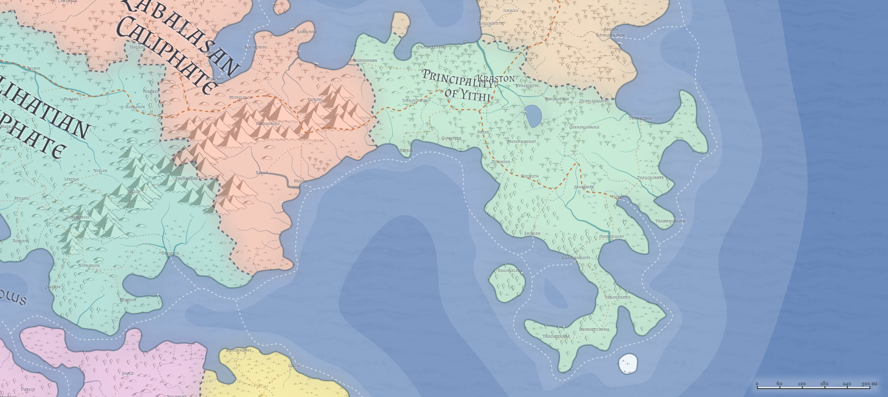

Yithi / Principality of Yithi
- Government: Republic
- Capital: Kraston
- Population: 6 million (~20% human, ~20% firstborn, ~15% Created, ~45% Hordish)
- Area: 330,000 sq mi
Yithi is a nation of fascinating energy and culture. Long ago, this territory (and that of Zhi, to the north) were the lands of the Hordes: a land of brutal tribes bent on conquest of the world. Over millennia, however, repeated stalemates, alternating meaningless victories and defeats, and even the periodic peaceful contact with other races led the more militaristic tribes to sail south to take up their war against Dradehalia. The tribes that remained, led by a charismatic minotaur named Yithi, chose instead to look for ways to improve themselves and their lives and create a civilization of their own that didn't rely on constant warfare. Yithi first gathered five tribes to meet with his, and on the shores of Lake Venerinat, they signed the Pact of the Five Nations that bound their tribes to his guidance and wisdom, with the explicit intent to unify all of the tribes in the former Hordes lands, to find a better life.
Over the next several hundred years, Yithi and his Five Nations ruthlessly crushed opposition to that dream. Tribes could either join with the growing nation, flee for other shores, or be exterminated. Legend says numerous tribes chose the latter, but many more chose the former, and some few chose to flee for lands to the south. (Several tribes sought an even more pacifistic lifestyle, fled north to join Yithi's spiritual advisers there, and together they founded Zhi.)
By the time Yithi lay on his deathbed in his tent, the nation he sought to create was largely built, its governing structure established, and the traditions of the new life he sought established. In his honor, the first Prince and his Council chose to name themselves after him, swore to honor him and his vision, and firmly set the nation on the path down which it follows even to this day.
Geography

Geographically, Yithi is a large collection of rainforest, grasslands, and periodic stretches of swamp. A range of hills extend out from the end of the Daw Mountain range in western Yithi, but for the most part, the land is flat, hot, and wet. As one moves further south, the wetlands dry out, the forests become more deciduous, and the wetlands turn more into grasslands.
The most dominant feature of Yithi, Lake Venerinat, is a cultural center of the nation; supposedly it was here, on its shores, that Yithi first began to give his public oration around a future of less war and more life. Legend holds that it was here, on the lake, that Yithi convinced the leaders of four other tribes to give his ideas a try, and it was here that the tribes forged the Five Nations Pact that created what would later become the Principality of Yihi.
(Asian rainforest)
Government
TODO, Prince of Yithi
Yithi is a Republic led by a Prince, the current one being the latest in the line of Yithi. The position of Prince is one that is elected-for-life, although the Governors of the Cities have the capacity to remove the Prince if necessary. Historically, the line of Yithi has figured prominently in the Prince's Council, if not holding the Prince's seat directly. Yithi was the first Prince elected to lead the Five Nations (not surprising since it was his sword that brought them all to the table to forge the Pact), and his wisdom and insight have often bred true, bringing many of his line into the Prince's seat as openings have appeared.
Yithi currently is made up of twenty-four tribes, each one in control of a city within the borders. (The capital is not owned by any particular tribe, but instead is governed by the Prince directly, who is of "all tribes and none".) Each tribe has a long history within the nation, particularly five tribes known as the First Five (Feldadar, Malauth, Sahramar, Shiagan, and Artar). These were the Five Nations that formed the original Pact that Yithi forged, then used to unite the rest of the remaining tribes. These five tribes nominally have an equal voice in the Prince's Council, but in practical reality these five are the first among equals. Jockeying among the tribes for prominence is typical, but in most cases, when the Prince speaks, all the tribes listen, and most large crises can be acted on quickly.
Each tribe is headed by a Chieftain, and each tribe decides for itself how it selects its Chieftain and how the Chieftain arrives at the decisions required for effective governance of the tribe. The Prince is nominally able to set aside any of these decisions if he feels it threatens Yithi as a whole, but history and convention compel him to remain officially aloof, even if his agents sometimes work to "guide" a tribe into a particular direction from within.
Yithi has roving magistrates called Marshals that provide an independent legal entity across the land. These are entirely independent of any tribal control, and report directly to the Prince. They act as a check against the power of the tribal chieftains, and are charged with keeping the law even in the face of tribal authority.
Political Structure
The twenty-four tribes of the Yithi, each corresponding to one of the cities within the Principality, are as follows:
-
Artar: First Nation tribe.
-
Feldadar: First Nation tribe.
-
Malauth: First Nation tribe.
-
Sahramar: First Nation tribe.
-
Shiagan: First Nation tribe.
-
Bagoslalare:
-
Dheupurwen:
-
Dragozakam:
-
Garhanosmena:
-
Ghaulanejasti
-
Glougiyka:
-
Heral:
-
Jernovalrimi:
-
Krikal:
-
Medehkerinat:
-
Natimorneh:
-
Onimintilarma:
-
Overoslugry:
-
Pramamorloth:
-
Prolaladasset:
-
Thaugnorryx:
-
Venerintyr:
-
Vennacwen:
-
Venonaxaxis:
-
Zisarlaarlathi:
Yithi's own tribe, which named itself after him, built Kraston. After the city's construction, however, Yithi disbanded them as a tribe, and charged them to form a different set of tribes, "homeless" in nature, that would govern the provinces of the cities but be forced to live within the tribal boundaries of those city-hosting tribes:
-
Zachoqal:
-
Chachiva:
-
Medehkerina:
-
Dheublar'ty:
-
Rathondan:
-
Kharat:
-
Merdenbia:
-
Durvorlilant:
-
Athaladatu:
These "homeless" tribes provide tribal structure to those who find themselves cast out of a tribe elsewhere within Yithi. These are associated to the provinces themselves, as opposed to a city within the province, and frequently the provincial Governor is the Chieftain of these tribes (although not always); Yithi deliberately arranged this system so that the "homeless" tribes would have a check against the power of the tribal Chieftains in the cities, and for the most part the distinction has served the Principality well.
Population
Without a doubt, Yithi is one of the most evenly-populated nation in all of Azgaarnoth, slightly titled towards the Hordish races (as would be expected given its history). Two-plus million sentient beings are mostly evenly divided across the country, and generally the races intermingle freely and openly--it is extremely rare to find a "elves' quarter" or "halfling shire" anywhere within the borders of Yithi, although it is often that some of the racial styles are populated by a cross-section of races. Some collections of Hordish families choose to keep to their nomadic roots, and journey from city to city, but these are growing more rare as the benefits of civlization grow more and more firm within the cultural mindset of the Yithian population.
Culture
Relations
Alalihat: Neutral. While not quite as fervent about exterminating the Principality as Zalabasa is, Alalihat definitely has no love for the ex-Hordes nation to its east. Alalihatian sailors, too, find the Sea Reavers a constant irritant, and constantly urge the Caliphate to take stronger action against those pirates.
Almalz: Friendly. Of all the nations of the Al'Uma, Almalz is the least hostile to the Principality, and Yithi sees no reason to worsen that relationship; they also, however, see no reason to improve it, particularly given the deep philosophical differences between the Prophet and the Seers.
Bagonbia: Neutral.
Bedia: Apathetic.
Dradehalia: Suspicious. Yithi's heritage means the Dread Emperor will never trust the Principality completely, and currently he seems convinced that Yithi, Tragekia, and Ulm are secretly brokering an alliance to destroy his nation. As such, relations with Yithi are close to open hostility, and are not aided by the constant predations of the Sea Reavers.
Liria: Concerned.
Mighalia: Friendly.
Tragekia: Suspicious. When the United Hordes chose to follow some of the same path as Yithi, the Yithi chose to respond with cautious optimism. The two nations are not friendly, having had too many years of near-constant warfare with one another to be truly trusting, but currently the two have avoided conflict for close to a century, and their shared racial legacies do leave some room for either growth or renewed hostilities.
Travenia: Apathetic.
Travesimia: Apathetic.
Ulm: Hostile. Yithi and Ulm are in a near-constant state of warfare, and members of each nation hate and loathe the other on sight. Yithi sees Ulm as everything they sought to evolve away from; Ulm sees Yithi as a constant reminder of weakness and failure.
Whaveminsia: Apathetic.
Zabalasa: Hostile. Yithi has no strong desire to continue the war with Zabalasa, but the incessant raids from the Zabalasan tribes into Yithi territory mean that Yithi continues to stand at war with their western neighbors. Practically, the war is at something of a standstill, as the Zabalasans are not yet comfortable with operating out of the Daw Mountains, and the Yithi are really not all that interested in pushing west except to reclaim lands west of the Srontacha and Szacah Rivers. The Dheubpurwen tribe has territorial ambitions to the west, to be sure, but for the most part those are thwarted in the Prince's Council in the name of attempts at peace with Zabalasa. In particular, the Yithian three-city fortress line of Dheubpurwen/Jernovalrimi/Krikal thwarts most Zabalasan progress east, and the longer the Yithi have to fortify those positions, the less likely the war will progress beyond that line. At sea, Yithi ships generally win out in combats over the Zabalasan vessels, and the Sea Reavers
Zhi: Allied. Where Yithi is a nation built around practicality and progress, Zhi is a nation of stargazing and mysticism, and as such the two nations see each other as useful complements to the whole. The two nations have shared history, shared culture, and their connections and relationships are deeply intertwined.